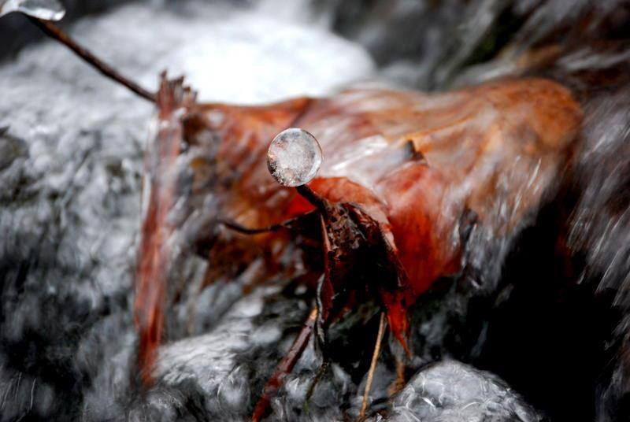
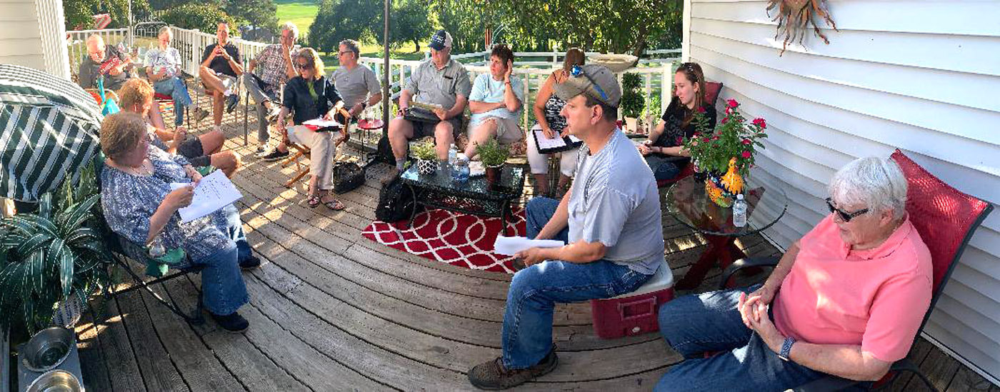

Traverse Area Camera Club
What is the Traverse Area Camera Club?
We are an informal group sponsored by The Presbyterian Church with the specific purpose of bringing together people who have an interest in photography and to promote fellowship, fun, education and knowledge of photography.
My History with the Club
I started with the club back in 2010 when I won their student contest for an image I had taken. Through that contest I was granted a scholarship into the club and I began growing my photography skills.
{kind=link}
Benefits of being a Member
When you become a member of the Traverse Area Camera Club you are granted access to photographers of all levels and generes. Everyone you come into contact with wants nothing more than to see you grow! We are an informal group sponsored by The Presbyterian Church with the specific purpose of bringing together people who have an interest in photography and to promote fellowship, fun, education and knowledge of photography.
How am I involved today?
As of 2023, I have been a part of the TACC for 13 years. I have served on the Board of Directors for the last 4 years, previously as the "Critique Night Co-Chair", and currently as the "Webmaster". My main duties are to maintain our website and email lists and keep them as up-to date as possible.
{kind=link}
Want to learn more?
Head over to tacameraclub.org and expore all the programs we have to offer!